Research & Professional Experience
Control Projects
| Project | My Role |
|---|---|
| Adaptive Control Design and Stability Analysis of RR Robotic Manipulators | Individual |
| Wheeled Inverted Pendulum | Control Engineer |
| Compensator Design (Experient) | Individual |
| Formula Air: Propeller-Powered Racing Vehicle |
Group Leader
Control Engineer
|
|
Robotics Projects |
|
| Project | Position / Award |
| The 12th HIWIN Robot Competition | Team Leader |
|
Group Leader
Programmer
|
|
| Vision-Guided Vehicle |
Group Leader
Computer Vision Engineer
|
| Grabbing Coffee Cups | Individual |
| Soccer Robot | Team Leader |
| Hello RoBi1.0 Robotic Startup Bootcamp, Taipei, Taiwan | Software Developer |
|
Other Experience |
|
| Experience | My Role |
| Symbio, Inc., Taiwan | Summer Intern |
| Coupled Pendulum | Simulation |
| (Game Design) InkBall | Algorithm Designer |
| (Game Design) Small White Ball | Visual Artists |
Control Projects
Adaptive Control Design and Stability Analysis of RR Robotic Manipulators
Spring 2020
Course: Adaptive Control Systems
Instructor: Dr. Ming-Li Chiang
Abstract:
In this paper, the adaptive control design and stability analysis of robotic manipulators is presented based on two approaches, i.e., Lyapunov stability theory and hyperstability theory. For the Lyapunov approach, two types of controlling a 2-degree-of-freedom (2-DOF) robotic manipulator are introduced, i.e., computed-torque control and adaptive control. In addition, the adaptive control is applied to the end-effector motion control and force control, and motion control (e.g., position control, trajectory tracking) will be emphasized in this paper. On the other hand, the control system developed through integrating proportional integral derivative (PID) and model reference adaptive control (MRAC) is convergent by hyperstability approach. The characteristics of the systems, developed by PID control, MRAC control and hybrid (PID+MRAC) control are compared.
Keywords:
Lyapunov stability
hyperstability
computed-torque control
model reference adaptive control (MRAC)
robotic manipulator
[Final Report ]
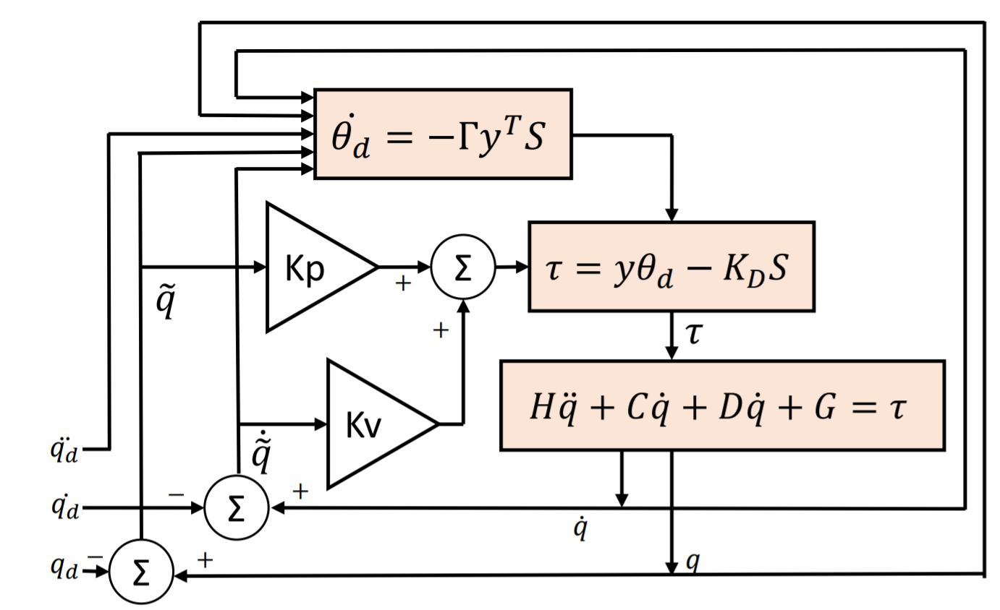
Wheeled Inverted Pendulum
Fall 2018
Course: Electrical Engineering Lab (Automatic Control)
Instructor: Professor Feng-Li Lian
In this project, we applied some control schemes to the pendulum. We also analyzed the characteristics of the system to improve the performance. The purpose is to shorten the settling time and minimize the steady-state error.
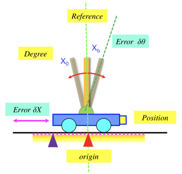
Experiment - Compensator Design
Fall 2018
Course: Electrical Engineering Lab (Automatic Control)
Instructor: Professor Feng-Li Lian
In this control experiment, a compensator is designed to meet the system requirments. By root locus, bode plot, and sisotool, these three are feasible approach to analyze the two motors presented in the report.
Keywords:
Compensator Design
Root Locus
Bode Plot
MATLAB sisotool
[Final Report ]
Propeller-Powered Racing Vehicle
Spring 2019
Capstone Course: Practice of Mechanical Engineering
Instructor: Professor Kuei-Yuan Chan
Midterm Test (May 2019)
Each team is asked to complete the route independently. The challenges include driving along the black line and avoiding the obstacle on the road. You can click the video link to see how our vehicle works.
[Introduction ] [Demo1 ]Final Test (June 2019)
Two teams should work together to finish the following task. One car has to goes along the black line, while the other car needs to closely follow it behind.
[Demo2 ]Final Report
We finally got A+ because we finished every challenging task. All of our brilliant design and engineering specifications were written in our final report. [Final Report (204 pages) ]
However, I personally recommend you to just read the short report below, which is the most important part of our final report. This control report will present you how we analyze the system model, and how we stabilize the system by using compensator design. By adding a compensator, the settling time is reduced from 3 hours to 3 seconds, and the overshoot is reduced from 71% to 18%. [Control Report (12 pages) ]
Keywords:
System Identification
Compensator Design
Root Locus
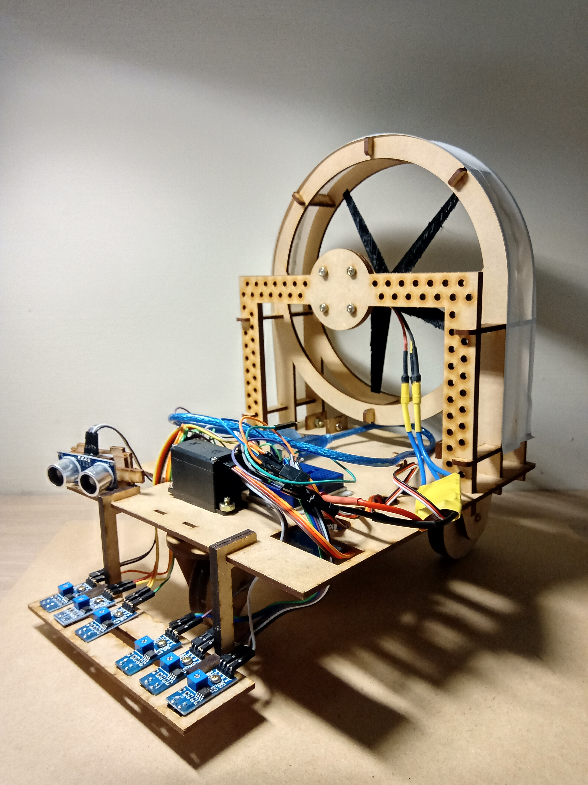
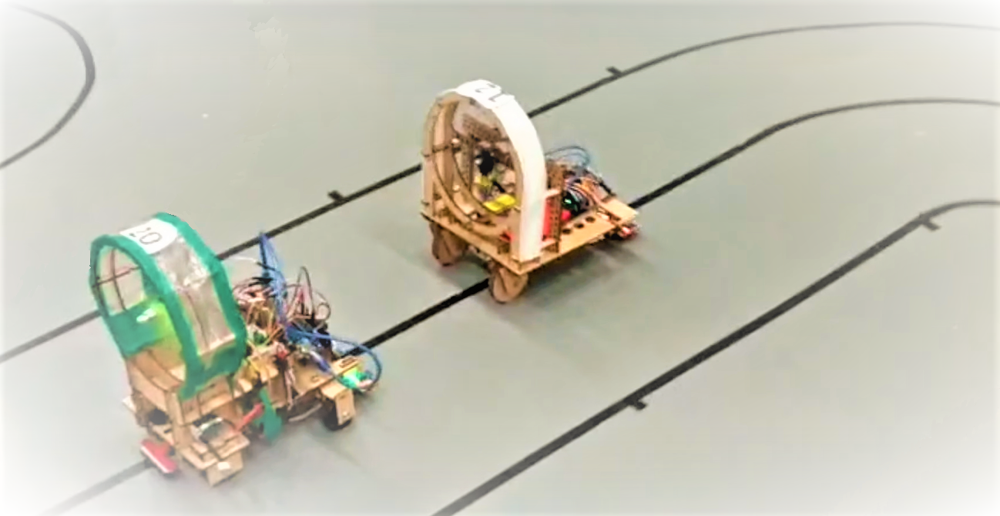
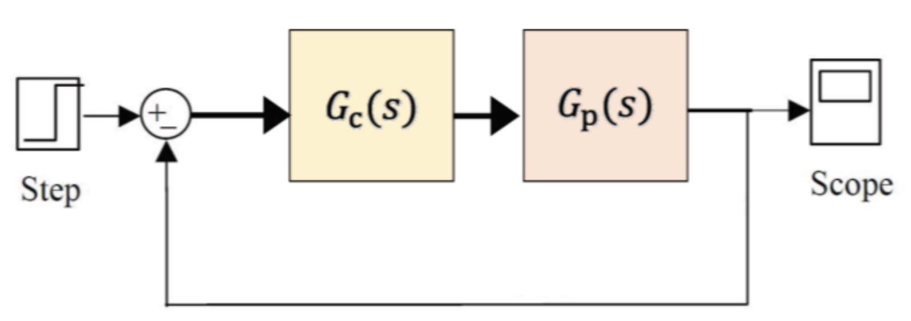
Robotics Projects
The 12th HIWIN Robot Competition
August 2019
Advisor: Professor Feng-Li Lian
To finish the following three games in this robotic arm competition, all of the participants should integrate the knowledge from motor and trajectory control to computer vision and mechanism design.
Game 1: Garbage Classification
While the Kinect camera needed to classify different types of objects, such as paper, plastic, and metal objects, the vision-based robotic grasping system was developed to predict the position of the selected object. Although the robotic integration was the complex part that most of teams failed to made their robotic arm perform well, our extensive programming experience in deep learning and Python accelerated our robotic arm to finish the game. My responsibility in this game was to modify a deep-learning pretrained model to ensure every position of objects can be identified.
Keywords:
RGB-D Image
Deep Learning
Robot Vision
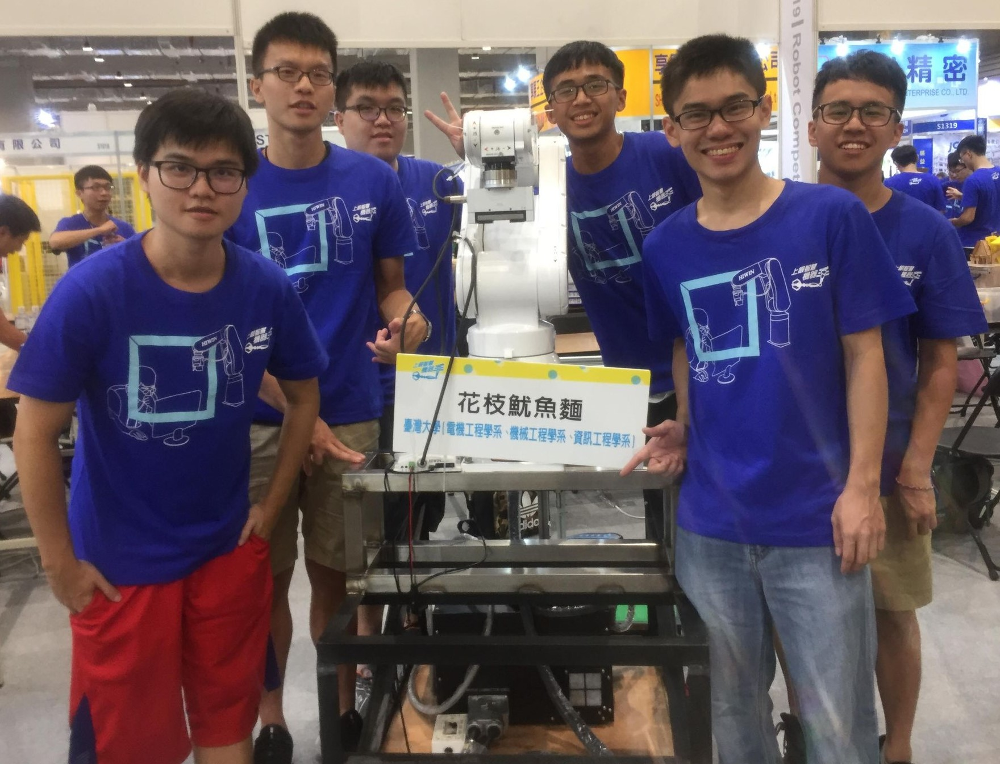
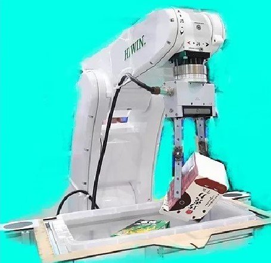
Game 2: Pool Game
Our computer vision algorithms are developed as follows:
First, the top view image from the webcam will be used for color detection. Then, after all of the balls are identified, the algorithm should choose the best from every possible direction. Also, since the location of the white ball is known, the trajectory of the robotic arm in 3D space can be generated. In this way, the robotic arm can successfully hit every ball!
Besides, to accelerate the progress of hitting balls, multiprocessing with OpenCV and Python was utilized, and a special stick installed on the gripper was designed to hit the ball. Specifically, I took responsibility for modifying the algorithm because of the limited length of the robotic arm. Although there was some part of area that the robotic arm cannot reach, we overcame all obstacles in our path to success. Dustin Moskovitz, a Facebook co-Founder once said, “Success is very much the intersection of luck and hard work.” Finally, we completed the pool game in 10 seconds and won the first place!
Keywords:
HSV Color Model Processing
Hough Circle Transform
Transformation Matrix
{kind=link}
Game 3: Hand-Shaken Beverage
The robotic arm should not only recognize what kinds of drinks the customers need, but it also needed to make a drink in a short time. Thus, speech recognition and motion control are two important parts of the game. To accomplish the task, we used Google SpeechRecognition API that can accurately convert voice to text and some 3D printed tools that can help the robotic arm. Also, the singular point that the robot cannot reach should be avoided. Given these factors, the robotic arm can independently make a delicious drink.
Keywords:
Robot Singularity
Speech Recognition
Acknowledgement
This project was mainly supported by Networked Control Systems Laboratory, advised by Professor Feng-Li Lian, and was partly supported by Ministry of Science and Technology, Taiwan.
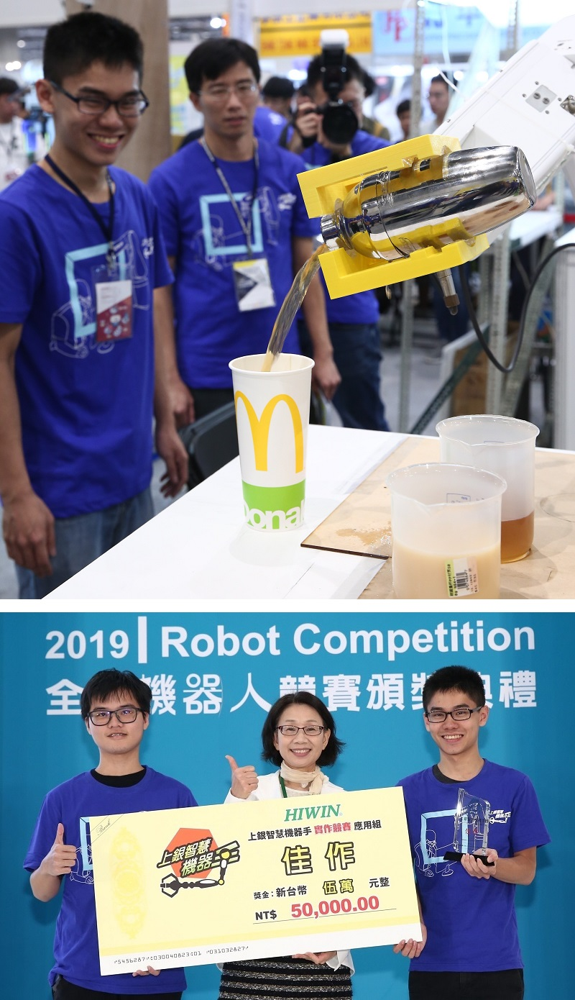
Introduction to Robotics - Course Projects
Fall 2018
Course: Introduction to Robotics
Instructor: Professor Han-Pang Huang, Pei-Chun Lin
The topics in this course covered from kinematics, dynamics,and trajectory planning to biot-inspired robots. Here, I will show you two of our projects completed in this robotics course.
Writing Robot
We used cubic polynomial to calculate the trajectory of our 2 degree-of-freedom robot. The purpose of this writing robot was to write a Chinese character: 春. [Demo ]
Keywords:
RR Robot
Cubic Polynomial
{kind=link}
Stair-Climbing Dustbot
The stair-climbing dustbot was a robot that had the ability to climb the stairs and load the garbage simultaneously. We developed two types of stair-climbing robot:
(1) Wheeled Robot:
The friction between wheels and the floor helped the robot climb the stairs successfully.
(2) Legged Robot
Four sets of leg rotation improved the strength while the legged robot is climbing up. We also derived the Lagrange’s equations of the legged robot, and the results were shown on the right-hand side. [Demo ]
Keywords:
Bio-Inspired Robot
Lagrange’s equations
{kind=link}
Vision-Guided Vehicle
Spring 2020
Course: Robot Vision
Instructor: Professor Han-Pang Huang, Chun-Yeon Lin
Since we have the ability to calculate the feedback from the encoder in our previous work, we plan to add another feedback system: a vision-based system. In this project, we want to increase the positional accuracy of the vehicle, and camera calibration from the constructed chessboards is the solution.
Keywords:
Camera Calibration
Transformation Matrix
Marker
[Final Presentation ]
Grabbing Coffee Cups
Fall 2018
Robotics Lab
Advisor: Professor Han-Pang Huang
Because the coffee cup must be grasped automatically be the robotic arm, a vision-based system should be designed to identify the position of the cup. The OpenCV module helped recognize the cup, and I combined the positional information to the robot system and enable the SCARA robot automatically reach the targeted site.
Keywords:
SCARA Robot
Hough Circle Transform
[Demo ] [Final Presentation ]
Soccer Robot
Spring 2018
Intelligent Vehicle & Mechatronics Laboratory
Advisor: Professor Kang Li
To collect and kick the soccer, several motors were installed on the soccer robot to enable it to run smoothly. This robot also took part in the ASME Student Design Competition and was one of the competitive robots.
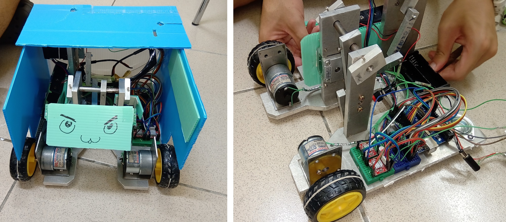
Hello RoBi1.0 Robotic Startup Bootcamp, Taipei, Taiwan
December 2017 – May 2018
Sofeware Developer
This bootcamp, organized by Syntrend Startup Foundation , provided young people opportunities to brainstorm new business ideas, and this activity gave all members access to many kinds of impressive service robots. As a software developer in my team, I took responsibility for embedding a recommender system in a Pepper robot . Our robot was targeted at those who were going to buy furniture. To promote the products in furniture stores, we strengthened our brand experience by online/offline integration to attract more customers. We eventually presented a profitable business model for furniture stores, and our innovative ideas have attracted a lot of attention in the startup community.
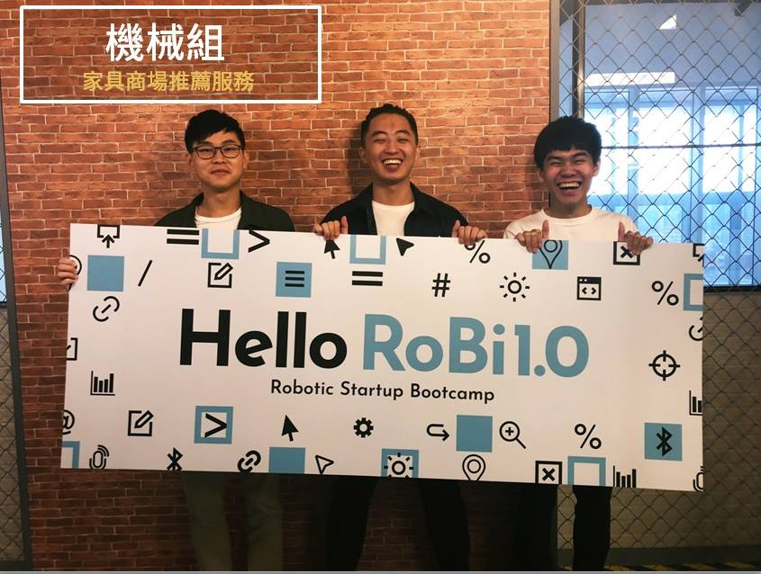
Other Experience
Symbio, Inc., Taiwan
Summer 2018
Mechanical Engineering Intern
Mentor: Vice President Ming-Guang Fong (馮明光 副總)
Symbio, Inc. (四維精密材料) is recognized as a leading adhesive tape manufacturer in Asia. During my internship, I was involved in product development to test different manufacturing process. Finally, we created an innovative tool to boost coating efficiency. Besides, I also worked in a team of eight technicians to maintain the manufacturing process. Actually, the maintenance requires experts with diverse discipline of engineering involving manufacturing, thermodynamics, material science, and chemistry. so I'm grateful that the company gave me a chance to see the entire coating process
Coupled Pendulum
Spring 2018
Course: System Dynamics
Instructor: Professor Pei-Chun Lin
The equation of motion of the coupled pendulum is derived from Lagrange's equations. The dynamics can be analyzed by using MATLAB, and the phase portrait can be visualized. [Demo ]
Keywords:
Lagrange's equations
Phase Portrait
InkBall
Fall 2017
Course: Computer Programming
Instructor: Professor Hung-Yun Hsieh
Story:
Professor Pink coming from the Rainbow Planet found that the majority of people on Earth settle for simple boring lives. On a rainy night, she brought a colorful pen with her and start her journey on Earth… [Demo ]
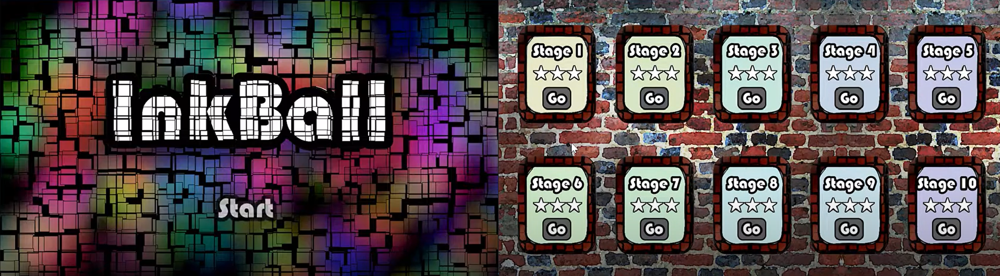
My Role:
The Professor Pink should obey the law of physics when she collides with everything in the game. The new direction after collision should be calculated, and it is a challenging problem, since all detailed facts should be considered in this programming project. In the end, we successfully developed the game. I was grateful that my friends and I could work together and solve the programming problem. The game design is awesome, and I really love this game!
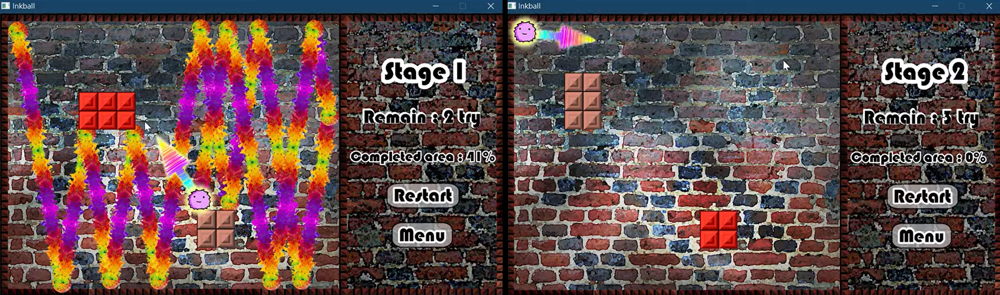
Small White Ball
Spring 2018
Course: Computer Programming
Instructor: Professor Shyh-Kang Jeng
This series game was developed in Unity and C#, and we all got A+ and received positive feedbacks from classmates because we took advantage of many visual effects available in the Unity Editor. We set a lot of different environment to roll the small while ball. Although the games are simple, players may fall into traps if they cannot control the ball stably. In fact, this series game is suitable for all ages, but please be careful when you are trying to beat a level. Good luck! [Demo ]
Top of Page
Tsung-Wun Wang
(+886) 975-398-879 | twwang97@gmail.com
Taipei, Taiwan